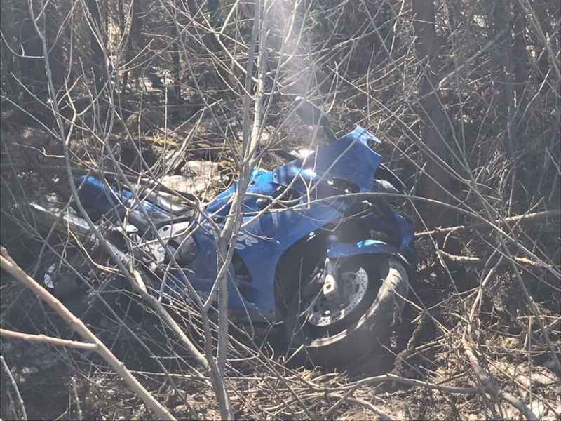

Про смерть, мотоциклы и "гиен"

Ну вот, опять началось. Как только погибает мотоциклист, раз за разом происходит одно и то же: откуда-то появляется множество (десятки) людей, пишущих "хруст", "оттаяли смертнички", "одноразовый", "сам виноват", "туда ему и дорога" и так далее. Эти люди подобны гиенам, они ходят вокруг погибшего, ржут, троллят, смеются. Причём их ценное оригинальное мнение о подобных ситуациях, которое обязательно все должны узнать, выражается ими ДО того, как стали известны какие-либо детали происшествия, ДО того, как получено официальное заключение ГИБДД, ДО того, как появились в открытом доступе записи с видеорегистраторов и вообще стало известно, кто виноват в сложившейся ситуации. А под аналогичными постами о ДТП с участием авто большинство пишет "соболезнуем", "кошмар" и так далее.
Вот пост в ЧП ДТП Пермь, а вот пост о том же ДТП в Мотобратство Пермь. Совершенно разные комментарии.
Отец с сыном ехали на двух мотоциклах из Ижевска к нам на трек, отец 57-ми лет, насколько мне известно, не справился с управлением и влетел в ограждение. Насмерть. Сын жив, цел.
Каждый раз я бью себя по рукам, когда хочу где-то в социальных сетях ответить на какой-то комментарий, потому что знаю, что всё это закончится троллингом в мою сторону, но в таких случаях не выдерживаю. Ниже приведу то, что оставил в комментариях в контакте.
Почему-то считается, что если ты передвигаешься на двух колёсах, то ты априори сам виноват в любом ДТП, произошедшем с твоим участием. Ну не может же водитель авто допустить ошибку в самом деле! Также почему-то считается, что если ты приобрёл мотоцикл, то это автоматически означает, что ты не соблюдаешь ПДД и передвигаешься со сверхсветовой скоростью, "не отражаешься в зеркалах" и тому подобное (лайфхак: предметы в зеркале отражаются, то есть достигают сетчатки глаза лишь в том случае, если в зеркало посмотреть, а не надеяться, что при совершении манёвра "там никого не должно быть").
Да, есть парни лет 18, которые купили себе спорт, не купили мозгов и перепутали дорогу с гоночным треком. Но нормальные байкеры и сами таких не любят не меньше, чем водители авто, но не судите обо всём сообществе по самой отмороженной его части.
Водителей авто, творящих опасную фигню на дороге, я встречал больше, чем водителей мото, делающих то же самое. Из-за этого я завязал с мотоциклами. Один раз водитель Вольво чуть не отправил нас с женой к праотцам, потому что ему, видимо, очень-очень нужно было развернуться в неположенном месте. Второй раз водитель Тойоты чуть не вытолкнул меня на встречку, решив сделать на Подлесной два ряда вместо одного. Смотреть в зеркала и включать поворотники, по его мнению, было совершенно не нужно, ведь там, куда он хотел вылезти, по его словам, "никого не должно было быть". Я двигался на 5км быстрее скорости потока и никому не мешал. А водятел потом несколько часов доказывал трём сотрудникам ГИБДД, что они и я неправы, а он прав, потому что он
1. 30 лет за рулём
2. я по ПДД не имею права (спойлер - имею) двигаться в одной полосе с другим транспортным средством, даже если не создаю никому помех (а он, по его мнению, видимо, имеет это право, так как туда и пытался вылезти)
3. что "меня там не должно было быть"
4. что он "не совершал никаких манёвров", а "просто повернул руль и поехал"
5. "а зачем я вообще выехал, сидел бы дома, ничего бы не произошло"
После этого, когда я только думал, стоит ли завязывать с мото, водитель УАЗа патриота, развернувшись через двойную сплошную, отправил к праотцам одного моего знакомого на Magna 750.
Мотоциклисты априори более уязвимы, чем водители авто. Там, где вы выправите, загрунтуете и покрасите крыло, водитель мото несколько месяцев будет лежать на больничной койке со спицами в ногах. Там, где вы замените крыло, водитель мотоцикла останется без ноги. Там, где вы смените машину по страховке, водителя мотоцикла просто не станет. А машины периодически так или иначе бьются, так же, как и мотоциклы.
Я сейчас, возможно, кого-то удивлю, но в любом дтп, произошедшем с участием мотоцикла, может быть виноват как водитель мотоцикла, так и водитель автомобиля, может быть виновато несколько человек или не виноват вообще никто - к сожалению, несчастные случаи тоже периодически происходят. Идиоты попадаются как среди водителей мотоциклов, так и среди водителей автомобилей. Идиотов среди водителей авто больше просто потому, что машин на дороге статистически в сотни раз больше, чем мотоциклов.
Я понимаю, что сейчас может подняться срач, поэтому отвечать на комментарии я принципиально не буду - можете писать, что хотите.
По поводу комментариев в стиле "хруст", "одноразовый" и тому подобных. Давайте чисто гипотетически представим, что в дтп или по любой другой причине умер кто-то из ваших родственников (не дай бог, конечно) и на похоронах приходит несколько десятков человек, которые начинают над этим смеяться.
- "Ха-ха! Одноразовый!"
- "Первый пошёл!"
- "Сам же виноват! Родился тут понимаешь, а от этого умирают."
- "Да все они смертники. То дорогу переходят, то под крышей ходят, с которой кирпич упасть может, то шаверму сомнительную едят."
Сколько вам лет, комментаторы? Вы кого-нибудь из своих близких хоть раз теряли?
Родственникам погибшего - мои искренние соболезнования. Комментаторам, пишущим "хруст", "одноразовый" и тому подобное - побольше мозгов. Не будьте быдлом, имейте уважение к чужой беде. Помните, что для фуры в вашей коробочке вы такой же точно "хруст" и "одноразовый", которого могут не заметить.
UPD: Жена заметила, что нельзя исключать "ошибку выжившего": у идиота на автомобиле куда больше шансов выжить в ДТП, чем у идиота на мотоцикле. Поэтому идиотов за рулём может оставаться в живых больше и по этой причине.Теги: moto